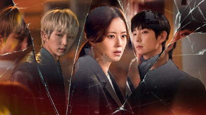
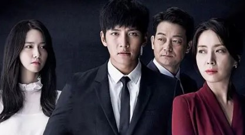
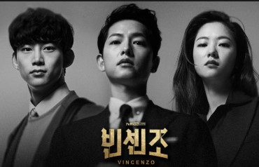
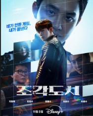
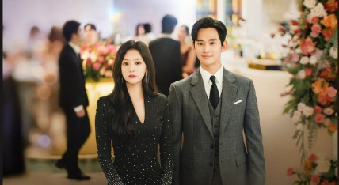
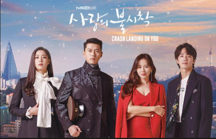

The Art of Korean Storytelling: From Emotional Tragedies to Visual Perfection
Published by: Hadeel Tawfiq Safi
Date Published:
1. Featured K-Drama Masterpieces
Korean television production blends complex plots with unmatched emotional depth. Here are the elite series that represent the peak of television industry:
• Flower of Evil
A gripping psychological thriller about a detective who begins to uncover dark secrets about her seemingly perfect husband. A flawless combination of suspense and heartbreaking romance.

• The K2
An elite political action thriller focusing on a former mercenary soldier turned bodyguard, diving deep into corporate corruption, high-stakes combat, and hidden family tragedies.

• Vincenzo
A spectacular dark comedy crime drama. An Italian mafia consigliere returns to Seoul to reclaim hidden gold, but ends up executing poetic, ruthless justice against a corrupt conglomerate.

• Fabricated City
A cinematic action masterpiece where an innocent gamer is framed for murder and uses his virtual gaming strategies alongside his online crew to demolish a massive corporate conspiracy.

• Queen of Tears
A luxurious, high-class melodrama that explores a marriage crisis between a department store heiress and a small-town lawyer, overcoming massive corporate conspiracies and severe personal health struggles.

• Crash Landing on You
A legendary, global phenomenon depicting a South Korean chaebol heiress who accidentally paraglides into North Korea, falling in love with an elite military officer who protects her at all costs.

2. The Iconic Stars: Elite Actors & Actresses
The success of the Hallyu wave is heavily driven by the profound talent and unparalleled charisma of its leading casts:
The Favorite Actresses
- Bae Suzy : The "Nation's First Love", famous for her incredible grace and versatility across romantic, action, and corporate tech-dramas.
- Im Yoona : A symbol of visual elegance and artistic dedication, effortlessly mastering intense thrillers and rich historical dramas.
- Kim Ji-won : The iconic star of Queen of Tears, celebrated for portraying strong-willed, elite, and deeply expressive characters.
- Son Ye-jin : The legendary heroine of Crash Landing on You, known for her unmatched emotional vulnerability and romantic screen dominance.
The Top Actors
- Kim Young-kwang : Celebrated for his remarkable physical presence, modeling background, and deep emotional acting range.
- Ji Chang-wook : The undisputed king of action and intense romance, delivering legendary performances as seen in The K2.
- Hyun Bin : The elite protagonist of Crash Landing on You, admired globally for his noble charisma, sophisticated charm, and powerful romantic delivery.
3. Production Aesthetics: Luxury Fashion, Scenic Landscapes & Narrative Logic
What sets modern Korean entertainment apart is the flawless execution of visual styling and strategic narrative design:
Luxury Fashion & Stylized Wardrobes
The costuming in K-Dramas is a masterclass in modern fashion and classic luxury. From the impeccably tailored suits of Vincenzo and the elite, high-fashion corporate attire of Kim Ji-won in Queen of Tears, to the sophisticated winter coats and classic rectangular watches worn by characters, fashion is used as a direct extension of a character's power, status, and emotional evolution.
Scenic Landscapes & Location Scouting
The cinematography takes viewers on a visual journey through contrasting worlds. It perfectly balances the hyper-modern, neon-lit skyscrapers of Seoul and glamorous business districts with the historic, peaceful Hanok villages. Furthermore, global backdrops—such as the breathtaking alpine landscapes of Switzerland in Crash Landing on You—are utilized to enhance the epic, fairy-tale quality of the storylines.
Narrative Logic & Emotional Depth
The plot progression in these dramas relies heavily on deep psychological conflicts, loyalty, and family honor. The writing carefully paces the tension across 16 episodes, making sure every character arc feels earned, and every soundtrack (OST) strikes the perfect emotional chord at the exact right second.
Featured Trailer
Watch the official featured presentation for the highly anticipated masterclass series "Can This Love Be Translated?" starring Kim Seon-ho and Go Youn-jung.
Note: This drama is absolutely thrilling, incredibly fun, and there isn't a single second of boredom! I was genuinely so happy and completely hooked while watching it. Highly recommended!